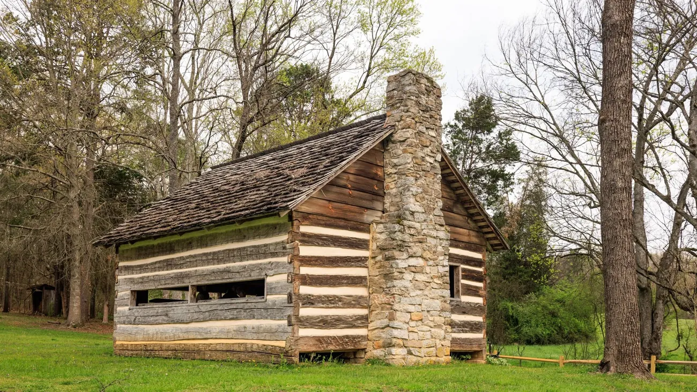
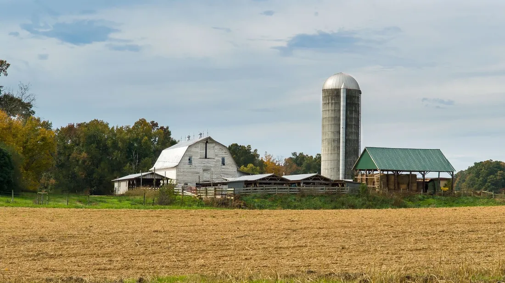
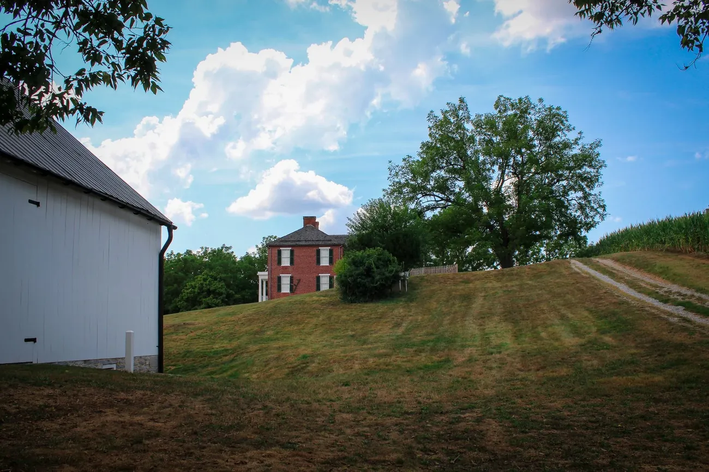

Pump-out and risers, Powell
"They found the tank in twenty minutes, pumped it, and fitted risers so nobody ever has to dig up my flower bed again."
Earl WhitakerPowell
Septic services in Knoxville and East Tennessee
Septic pumping, inspections and repairs across Knox, Blount and Anderson counties. We measure the sludge on every visit and tell you in writing when you are next due.

Service ticketNo. 4471
When am I due?
Every flush adds a little sludge. Tell us about the house and when it was last pumped, and watch the layers the way our sludge judge sees them.
A sludge judge is a clear tube we push to the bottom. The dark part is sludge.
Tank size
Not due yet
Pump about every 2.6 years
Your tank is roughly a quarter solids. Book a pump-out within the year.
Keep it healthy
Most of the backups we pump out start with one of these. Stick this list inside the cabinet door.
They do not break down, whatever the packet says
It sets hard and clogs the outlet
Made to stay strong when wet
Clay and sand go straight to sludge
They kill the bacteria doing the work
Take them to the county drop-off
It tangles round the pump
A fast way to fill a tank
Septic safe brands break down fastest
One load a day, not seven on a Saturday

From Powell to MaryvilleMost of our tanks are behind farmhouses, cabins and newer homes on a few acres.
Services
Up to 1,000 gallons, filter cleaned and sludge measured.
For home sales and lenders, with a camera look at the lines.
Lids brought up to ground level, so nobody digs again.
Located, tested and priced in writing before we dig.
Nights and weekends, with a person on the phone.
Reviews
Pump-out and risers, Powell
"They found the tank in twenty minutes, pumped it, and fitted risers so nobody ever has to dig up my flower bed again."
Earl WhitakerPowell
Inspection for a sale, Maryville
"Our buyer's lender needed a septic inspection inside a week. They came in two days, with a camera report and sludge readings the lender accepted."
Donna PruittMaryville
Emergency backup, Karns
"Sunday night, water coming up in the basement shower. They were here by nine and had it pumped by ten."
Caleb RhodesKarns
For most families, every 3 to 5 years. The calculator above gives a closer number for your household and tank size.
From your property records and a probe, usually within half an hour. Risers then bring the lids up to ground level for next time.
No. A healthy tank already has the bacteria it needs, and no additive replaces pumping.
Slow drains, gurgling pipes, sewage smells, or soggy, bright green grass over the drain field. Call before it backs up.
Yes, with sludge measurements, a camera look at the lines, and a written report that lenders accept.
Book a pump-out
Tell us your address and roughly when the tank was last pumped. We bring the truck, the camera and the sludge judge.
